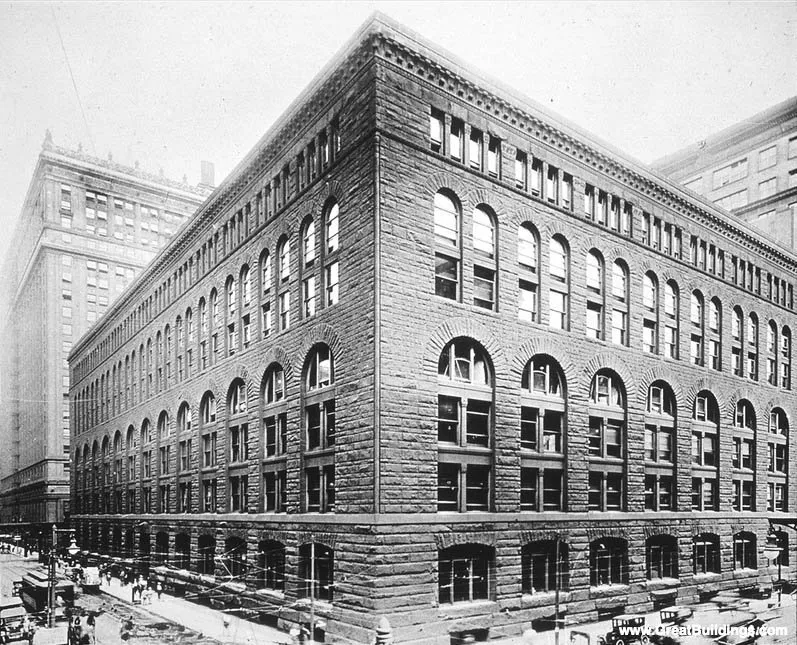
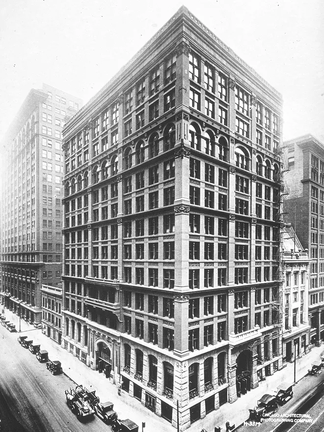
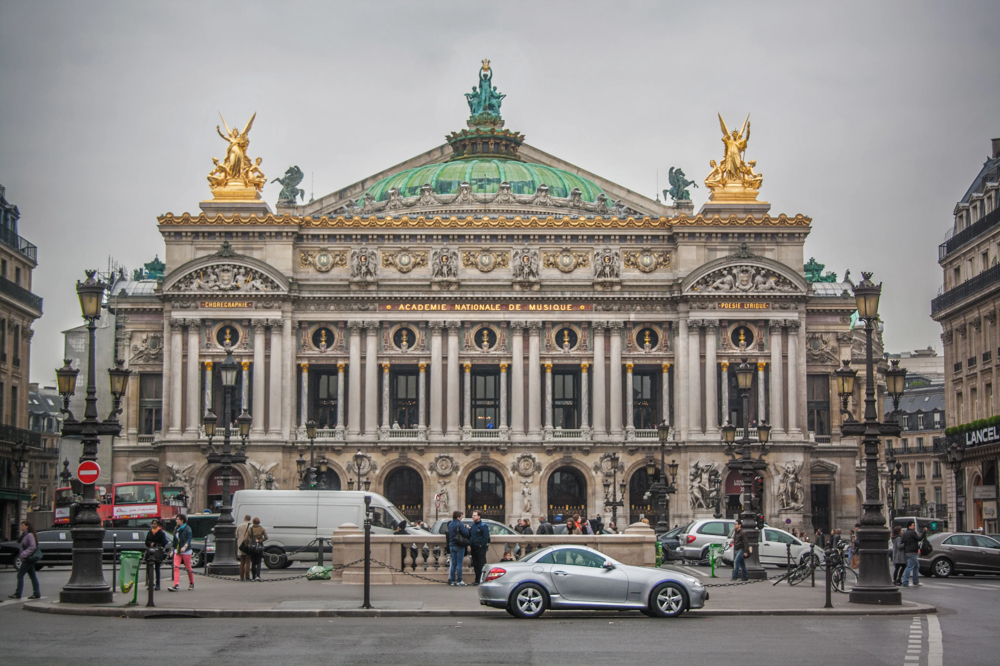
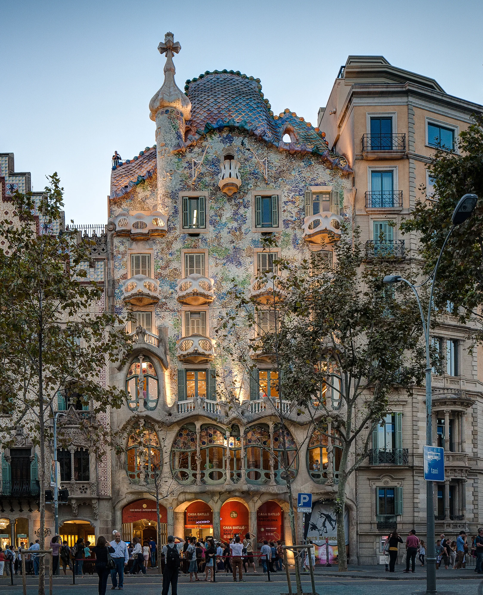
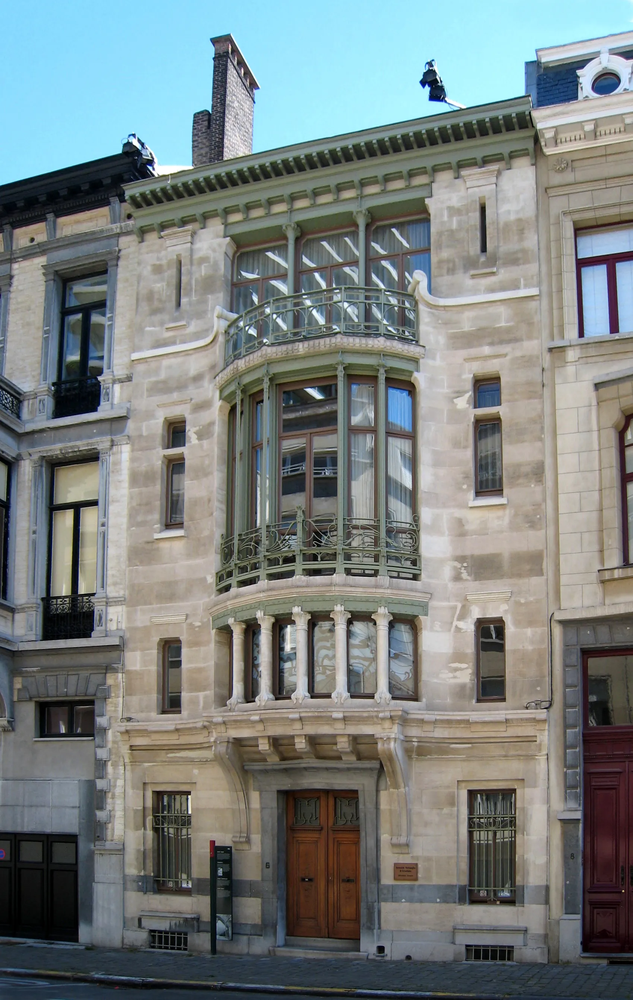
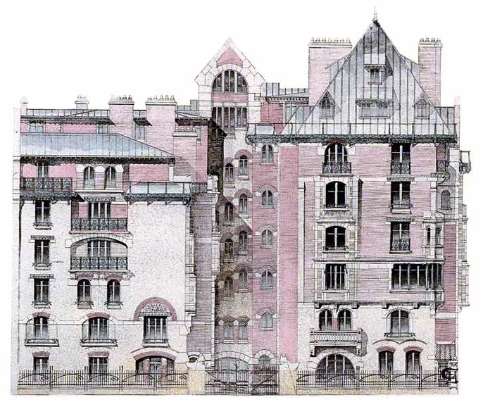

从哥特复兴到世纪之交的形式争鸣
本文对哥特复兴时期到1900年前后欧洲建筑的重大历史事件和代表性作品进行了梳理
从从古希腊的梁柱结构到古罗马的拱券结构，欧洲大陆的建筑形式一边不断吸收着前人的建筑特点，一边结合自己的新技术进行改良。
这种浪潮在中世纪的哥特式建筑身上到达了一个顶点——高耸环绕的飞扶壁解决了墙体承力的问题，使墙体不再粗大厚重，让大面积的窗户变为可能；编织成网的肋拱券则解决了穹顶跨度的问题，使穹顶不受圆形的限制，让单方向上延伸的均一空间变为可能。
英法工业时代伊始的哥特复兴运动
彼时刚刚经历了政权体系剧变的英国和法国急需一种有别于当时建筑形式的建筑，以此来匹配“时代变了”的大环境。文艺复兴建筑的前代，哥特建筑，因为夸张的造型和与文艺复兴建筑的巨大差异，自然成为了首选。
在英国复兴哥特的运动之中，Augustus Pugin和John Ruskin可以算得上是代表人物。前者是英国国会大厦（Palace of Westminster）室内装潢和钟楼的设计师；而后者则是维多利亚时期最具影响力的艺术批评家之一，出版了大量著作。而吸收了Ruskin主要思想的William Morris则是另外一位代表人物，他在不久之后与Pugin和Ruskin一同主导了美术工艺运动，倡导手工艺回归。他自己设计并建设的小屋Red House则成为了美术工艺运动的代表建筑，其（在那个时代）独特的非对称美学与高规格古典建筑的对称设计产生巨大差异，另外整个建筑也没有镶嵌任何装饰，看似装饰的设计其实都服务于结构的需要。同时他也宣扬“Art for all”的理念，开办壁纸厂，让各个阶层的人民都能感受艺术之美。

与此同时，英吉利海峡东边的法国也同样在进行着哥特复兴运动，从Claude Nicolas Ledoux和Étienne-Louis Boullée到Louis Durand再到Viollet-le-Duc，他们的工作逐渐从建造新古典主义建筑转为修缮旧的建筑（特别是哥特主义建筑，如巴黎圣母院）。可以发现，相对英国维多利亚时期大量新建哥特风格建筑的潮流而言，法国的哥特复兴运动在实践方面显得保守的多。但是他们的著作却实实在在的影响了下一代建筑师，特别是Viollet-le-Duc，作为拿破仑三世夫人的建筑启蒙老师，他的思想影响了如Corbusier等一众后人。
其实这个时期无论是英国还是法国的代表人物在思想上都有了功能主义（functionalism）的萌芽，但是真正提出这个概念的是受到Viollet-le-Duc极大的影响的美国籍爱尔兰建筑师Louis Sullivan，这个我们之后再细说。
工业化浪潮中的新材料
马克思曾说过“时间会颠覆空间”。我的理解是新材料和新技术的引入会使建筑与过去有完全不同的展现方式。就像从内部满是立柱的古希腊神殿，进入到拥有巨大穹顶和空旷中庭的古罗马建筑，再来到内部高耸却光线充沛的哥特式教堂，时间颠覆了我们建造建筑的材料和方式，因而也颠覆了建筑内部的空间。
而在工业化浪潮中，铁和混凝土无疑是建筑结构材料的新成员，其中铁又分为韧性好的生铁和可塑性强、抗压性好但是脆的铸铁。固然更现代的社会与新物件的发明分不开关系，但是有了新材料了并不意味着就会产生新建筑，这其中需要一个观念转变的过程。而在工业化浪潮之前，这个观念转变的时间点就在路易十四的古今之辩。
古今之辩之前，建筑师们尤其认为建筑的创新是不好的，因为它牵扯到艺术性和传承。而古今之辩之后的工业浪潮中发生的事我们都知道了，新式的建筑如雨后春笋般出现，其中不得不提的是水晶宫（Crystal Palace）。

说起来你可能不信，作为第一届世界博览会的举办场馆，水晶宫的原型居然是来自于温室大棚，而他的建筑师则是一名园艺师。但是这极具创意的设计搭配上新材料却确确实实地为建筑的使用者们带来了好处。因为通体使用铸铁杆件组合的桁架搭建，水晶宫的支撑结构截面面积极小，为参展的人们带来了非常充裕的实用面积；因为通体使用玻璃作为墙体，水晶宫的室内光线非常充足，甚至真的能作为温室展示来自热带国家的奇花异草；因为它标准化的建造方式，整座建筑甚至是可拆装的，因而其在1854年搬过一次家。
除了水晶宫之外，还有一些建筑如生铁制的加拉比特 高架桥（Viaduc de Garabit）。法国国家图书馆（Bibliothèque nationale de France）也是这个时期很有代表性的建筑。但是相比水晶宫的颠覆性，法国国家图书馆的古典式外立面与内部铸铁立柱的组合就显得保守得多了。

但是这个时期也不乏“仿古”的新建筑，这是因为一种新材料被使用之后，解决这种材料的审美还需要时间。铸铁和混凝土可塑性强的特点既是好的，也可能是“危险”的——他们有可能让建筑回到原来传统的那种建筑形式，因为建筑师习惯于建造自己熟悉的东西，比如文艺复兴建筑。
大洋彼岸的现代主义建筑
说回Louis Sullivan，作为美国籍的建筑师，他对美国现代主义建筑的诞生有着不可磨灭的贡献，甚至被称为摩天大楼之父。不过美国现代主义建筑的萌芽应该得从西进运动（1850-1890）讲起。这个时期美国西部因为淘金热诞生的小镇里的建筑主要都是轻质木结构（Balloon-frame）的。这种建筑的产生其实是因为美国没有建筑师、匠人、工人这样一个生态，因而建筑更追求时效性跟审美的对应关系。
而在美国的中东部因为城市化进程进展迅速，以芝加哥为代表的的城市开始出现摩天大楼——一种提高容积率，解决土地使用效率问题的新建筑。在摩天大楼出现之前，芝加哥的很多建筑是类似 Marshall Field’s Wholescale Store(1885-1887, destroyed in 1930)的，它的建筑师是Henry Hobson Richardson, 美国人, 就读于École des Beaux-Arts(est. in 1671)。此时它的立面仍然还是承重的，而且很明显建筑的纵横比还是比较古典的那种三段式，一种拟人的形式。但是因为立面造型的变奏，建筑看起来变得更加高耸了。

而公认的世界上第一座摩天大楼则是The Home Insurance Building(1884-1885, destroyed in 1931)，它的建筑师是William Le Baron Jenney, 美国人, 就读于École Polytechnique(est. in 1794, by Napoléon I)。它与之前介绍的那座建筑在结构上最大的不同就是他的立面不再承重，所有作承重作用的结构都是建筑内部的钢结构。而建筑也成为了真正意义上的高层。这种建筑高度比宽度大的多得多的比例显然是对古典主义三段式比例的冲击，甚至可以说是摆脱了古典主义对建筑比例的束缚。

随着越来越多的摩天大楼在芝加哥拔地而起，芝加哥的一些建筑师组成了芝加哥学派，比较著名的有：Daniel Burnham(1846-1912)，Martin Roche(1853-1927)，William Holabird(1854-1923)，以及之前提到的Louis Sullivan(1856-1924)。而Sullivan的“Form follows function”即“形式服从功能”也被认为是功能主义的核心思想。值得一提的是，Sullivan的学生Frank Lloyd Wright(1869-1959)被后人誉为四大现代主义建筑师之一，他推崇的Organic Architecture–自然与建筑的和谐，也被后世许多设计师奉为圣经。
世纪之交的欧洲大陆
这一时期欧洲则进入了世纪之交的形式争鸣。首先开始的便是欧洲大陆的新艺术运动，这一运动中比较有代表性的建筑师和代表作如下：
| 建筑师 | 建筑 | 备注 |
|---|---|---|
| Charles Garnier (1825-1898) | Opera Gamier (1861-1875) | Style of Napoleon III |
| Facteur Ferdinand Cheval (1836-1924) | Palais idéal (1879-1913) | A mix of different styles with inspirations from Christianity to Hinduism |
| Antoni Gaudi (1852-1926) | Casa Batlló (1904-1906) | Is only identifiable as Modernisme or Art Nouveau in the broadest sense |
| Victor Horta (1861-1947) | Hôtel Tassel (1892-1893) | Innovative plan and groundbreaking use of materials and decoration |
| Hector Guimard (1867-1942) | Castel Béranger (1895-1898) | The first residence in Paris built in the style known as Art Nouveau |





与此同时也短暂地出现了历史主义流派，和style 1900流派(1895-1910)。
再之后便是各位建筑师关于理性主义和现代风格的尝试了。理性主义作为启蒙运动的指导思想，确实影响了一批设计师，比如J.-N.-L.Durand: 毕业于École Polytechnique，革命建筑师；以及Julien Guadet: 毕业于Beaux Art，著有Éléments et théorie de l’architecture。
可以说到此为止就是欧洲建筑从哥特复兴到1900年前后变化的一个全貌了，中间插入了一段美国的建筑史因为这段建筑史同样对现代建筑有极大影响，而且他也受到了欧洲建筑变化的思想的影响。建筑师其实不能算严格意义上的艺术家，因为他们是为别人做嫁衣，但是这些建筑师却在有限的条件下实现着自己的追求，可能这就是能在世纪之交形成百家争鸣状况的原因吧。